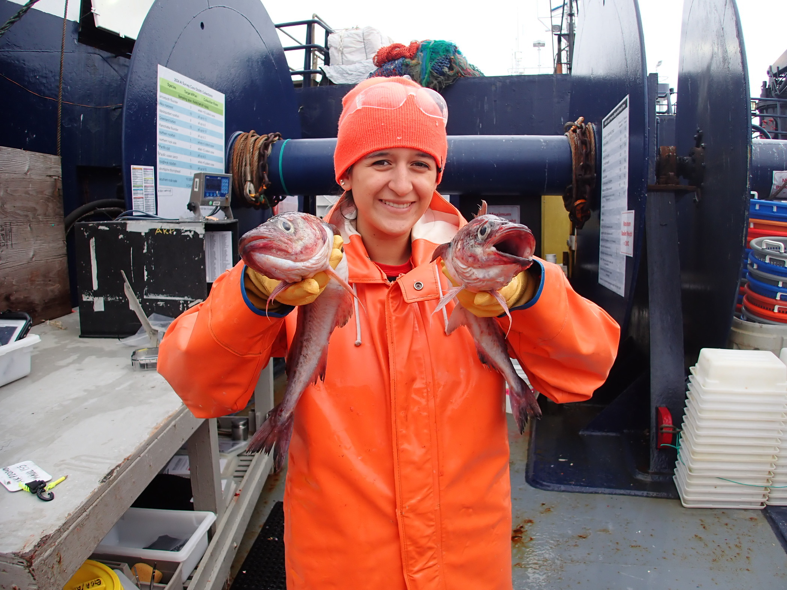

POLLOCK BIOENERGETICS (IN PROGRESS)
This project investigates the feasibility of using walleye pollock diet data collected by fisheries observers between 1985 and 2008 to examine the potential effect of seasonality on foraging success. Most of the Bering Sea stomach samples analyzed by the Trophic Interactions Lab come from summer RACE Bottom Trawl Surveys. Once processed, these data are incorporated into food web and bioenergetic models managed by the Resource Ecology and Ecosystem Modeling group at the Alaska Fisheries Science Center. As a result, these models largely reflect summer feeding ecology—a period when Alaskan groundfish, including pollock, typically consume more prey. In collaboration with Dr. Kirstin Holsman, I aim to explore the effects of seasonal shifts—such as spawning events or prey population changes following algal blooms—on pollock’s relative foraging rate (RFR), which is the ratio of observed consumption to maximum potential consumption.
Research Question
I am currently investigating whether the observer dataset can be used to assess seasonal effects on Southeastern Bering Sea walleye pollock RFR. Observer collections are oportunistic, therefore, the data reflects inconsistent sampling, with high variability in sample numbers across seasons, months, years, and locations. Before I can further explore potential seasonal trends, I have to determine whether that task is feasible with the available data.
Project Status
This project is ongoing, and much of the initial work has focused on data exploration and model development. I received a raw version of the dataset and spent time familiarizing myself with its structure, the sampling methodologies, and the types of information captured. In addition to data exploration, I conducted preliminary visual analyses of seasonal diet composition changes. I also reviewed relevant literature on Arctic fish bioenergetics, extracted key variables from various databases, and reorganized the dataset. Currently, I’m developing generalized additive models (GAMs) to identify trends that may reflect true seasonal effects, distinguishing them from noise or sampling inconsistencies.
Motivation
I initiated this independent project to further develop my coding and biostatistics skills, areas where I had little formal training. Although pollock bioenergetics is not my primary research focus, I am deeply engaged with the lab’s work and fascinated by the complexity of marine ecosystems. This project allows me to follow the journey of data from field collection to its use in fisheries management—a process I am passionate about, particularly as it involves understanding ecological dynamics across seasons and years.